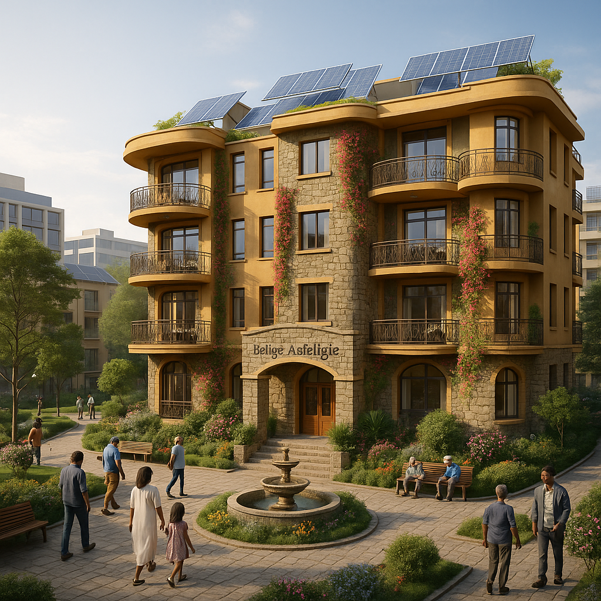
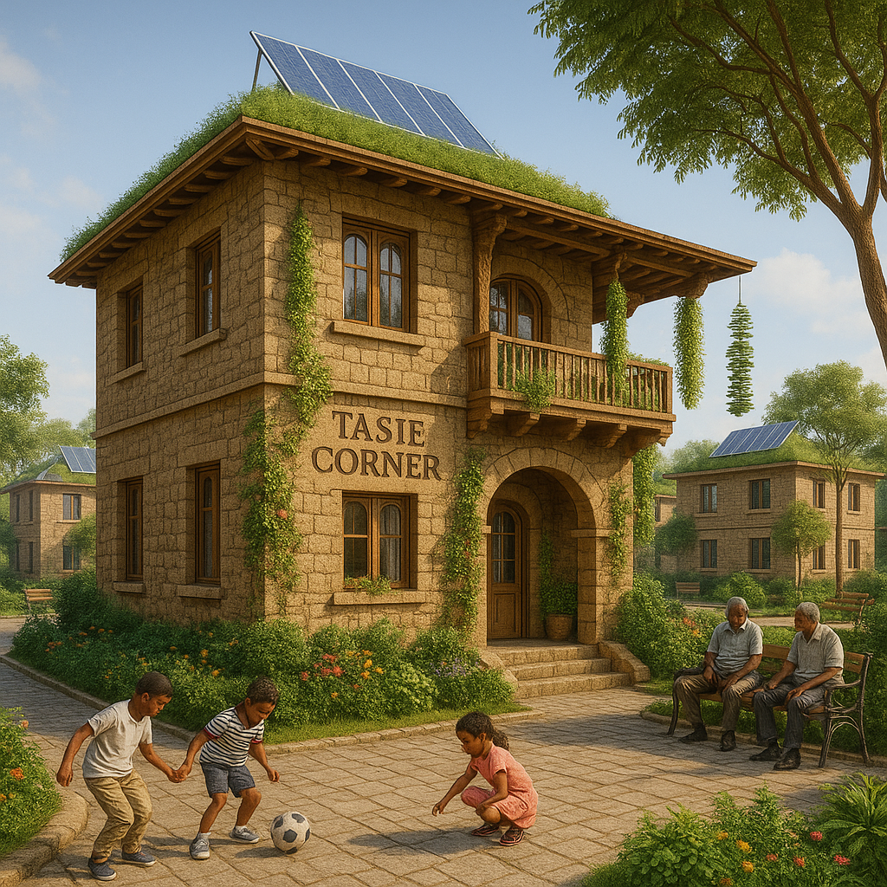

Rebuilding What Was Ours
We are not just mourning what was lost — we are rebuilding it. This section presents our architectural vision for an Addis Ababa that honors heritage, provides dignified housing, and rises from the ashes of displacement.
🏠 Housing Blueprints & Designs
Each complex below is a resurrection — inspired by homes destroyed under the so-called Prosperity “Corridor.”
🟥 Kazanchis Rising

Modern eco-complex built from the rubble of Kazanchis, merging history with tech and housing justice. it is A bold symbol of rebirth
🟦 Felige Asfeligie
Inspired by Tilahun Gessese’s lost love home. This is a place for music, resilience, and beauty reborn.
🟨 Imru Heights

A towering tribute to Ras Imru Haile Selassie’s stand against fascism and betrayal.
🟩 Tasie Corner
A corner of strength, memory, and Menelik-era pride, built after Grazmach Tasie’s heritage home.
🏠 BLANKA NEVER DIES! WE WILL RISE LIKE THE MORNING SUN. (forever.)
Each complex combines tradition with modern tech — solar energy, water-saving systems, communal courtyards, and trauma-informed design. These are homes of dignity. Homes of return.
የአዲስ አበባ ልጆች ነን። እንመለሳለን።